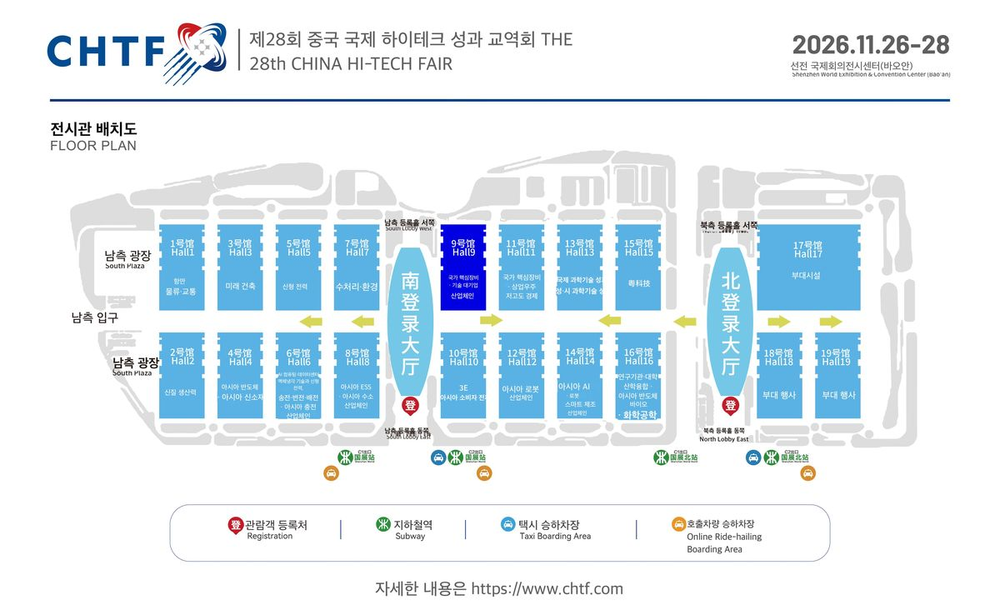

국가 핵심장비·테크 대기업 산업체인

국가 핵심장비·테크 대기업 산업체인전
2026년 11월 26~28일
선전 국제회의전시센터(바오안)
1. 전시 성격
고급 장비 제조업과 핵심 기술 산업체인은 국가 종합 역량의 중요한 기반입니다.
2026 '국가 핵심장비·테크 대기업 산업체인전'은 중국을 넘어 세계에서 가장 가치 있는 산업 성과 전시 플랫폼을 지향합니다. 국가 안보와 과학기술 혁신이라는 두 전략 수요에 맞춰 항공우주, 해양공학, 에너지 장비 분야의 핵심 역량을 모으고, '0에서 1'의 독자 혁신과 '1에서 N'의 산업 생태계를 보여 줍니다.

2. 전시 범위
1. 항공우주
주요 전시품: 차세대 민간·군용 항공기, 드론 시스템, 위성 제조·응용, 로켓 기술, 항공엔진 핵심 부품, 기내 시스템

2. 고급 선박·해양공학 장비
주요 전시품: 대형 LNG 운반선, 심해 시추 플랫폼, 과학 조사선, 선박 동력 시스템, 수중 로봇, 스마트 항만 장비

3. 중대 과학기기·연구 장치
주요 전시품: 전자현미경, 질량분석기, 분광기, 고정밀 센서, 실험실 자동화 장비, 대형 과학장치 핵심 부품

4. 에너지 장비·중공업
주요 전시품: 원자로 주요 설비, 풍력발전기, 고효율 태양광 제조 장비, 초고압 송변전 장비, 수소 생산·저장·운송·충전 설비

5. 스마트 제조·대형 공사 장비
주요 전시품: 초고강도강, 정밀 공작기계, 산업용 로봇, 쉴드 TBM, 대형 크레인, 스마트 광산 솔루션
3. 전시 특징
산업 거인 집결: 중앙기업 그룹, 국가급 연구기관, 세부 분야 '단일 품목 챔피언' 기업을 초청합니다. 제품 전시를 넘어 산업체인 핵심 기업과 협력사가 만나는 자리입니다.
첨단기술 첫 공개: 여러 참가사가 연례 신제품 발표회를 열어 극한 환경 소재, 핵심 산업 소프트웨어, 정밀 가공 기술의 최신 성과를 선보입니다.
심층 수급 매칭: 전시 기간에 '공급·수요 매칭대회'를 열어 비공개 상담을 진행하고 군민 겸용 기술의 양방향 전환을 돕습니다.
고위급 싱크탱크 포럼: '대국중기 서밋'을 열어 원사와 전문가가 국가 전략과 산업체인 안보, 기술 로드맵을 해설할 예정입니다.
4. 관람객
중앙부처·지방정부 인사: 산업 현황 조사와 산업 배치 지도
중앙기업·국유기업 구매단: 적격 공급사 발굴, 공급망 최적화
연구기관·대학 학자: 기술 동향 파악, 산학연 협력
국내외 전문 투자기관: 핵심 기술 장벽을 가진 우량 대상 발굴
국제 업계 단체·주중 외교사절: 국제 생산 협력과 기술 교류
5. 선전에서 만나요
중국과 세계의 과학기술 혁신 거점인 선전은 탄탄한 산업체인과 개방적인 시장 환경으로 국가 핵심장비가 탄생할 토양을 제공합니다.
2026년 11월 26~28일, 선전 국제회의전시센터(바오안)에서 중국 제조의 저력을 함께 확인하고 안전하고 자립적인 현대 산업체인을 만들어 갑시다.
6. 연락처
1. 참가 문의
0755-8524 2014
0755-8810 2141
185 0304 6363 (위챗 동일)
2. 참관 문의
18194055260 (위챗 동일)
3. 회의 문의
17512091512 (위챗 동일)